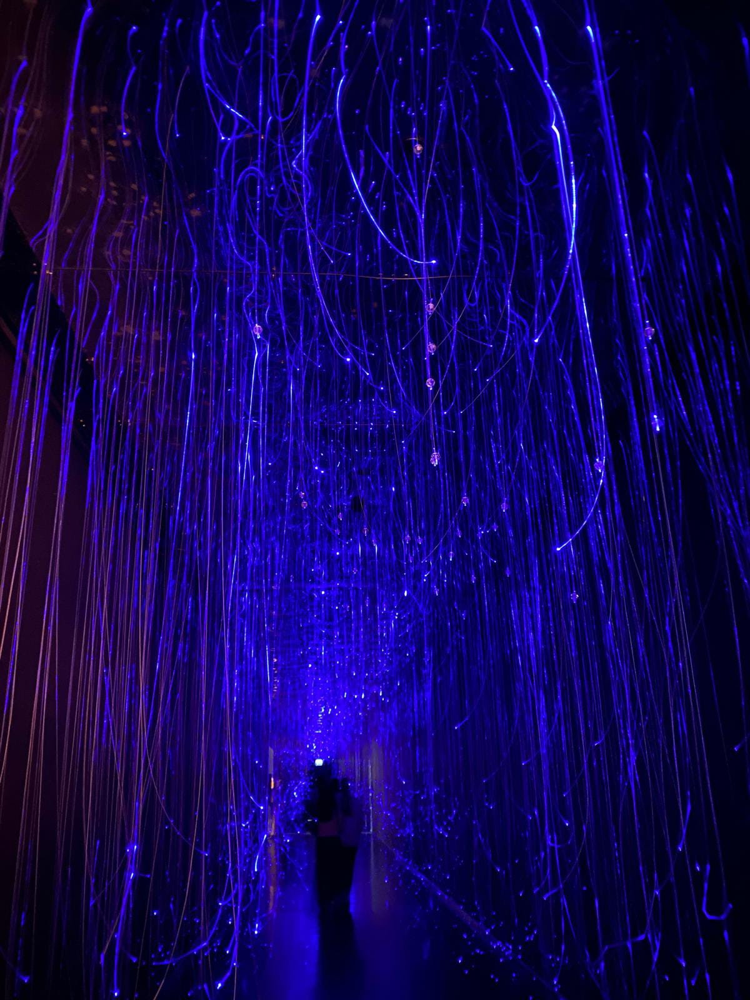

Işık & Teknoloji Enstalasyonu
Dijital Yankı & Sinyal Akışı
Veri iletimi ve sinyal akışının fiziksel alanda ışık lifleriyle somutlaşması. Bilgisayar biliminin soyut yapısının görsel bir deneyime dönüşümü.